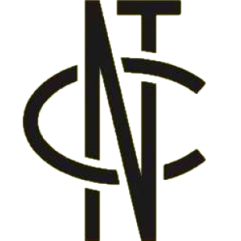

NCT란?
NCT는 SM엔터테인먼트 소속의 다국적 보이그룹이다. Neo Culture Technology의 약자이며, SM엔터테인먼트의 신기술 New Culture Technology의 약자이다. 또한, n(많은) + city(도시)로 전세계의 도시에 NCT가 있기를 바라는 마음에서 지은 이름이다.
NCT의 핵심 키워드는 무한개방, 무한확장이다.1) 무한개방: 멤버 수의 제한이 없으며 새로운 멤버의 영입이 자유롭다.
* 그룹에서 멤버 구성이나 수의 제한 없이 언제든지 바뀔 수 있다.
2) 무한확장: 다양한 도시에서 다양한 구성으로 활동한다.
* NCT 127 같은 경우 서울을 무대로 활동한다는 의미에서 서울의 경도를 팀명에 넣었다.
** NCT U에서 U는 Unit과 United를 의미하며, 지역팀(Unit)들간의 교류를 통해
연합된(United) 멤버를 구성하여 활동하며 고정된 멤버 없이 곡에 따라 어울리는 멤버를 선정한다.
멤버
94 태일
95 쟈니, 태용, 유타
96 쿤, 도영, 텐
97 재현, 윈윈
98 정우
99 마크, 샤오쥔, 헨드리
00 런쥔, 제노, 해찬, 재민, 양양, 쇼타로, 성찬
01 성찬, 천러
02 지성
자세한 내용은 NCT 문서를 참고하십시오.